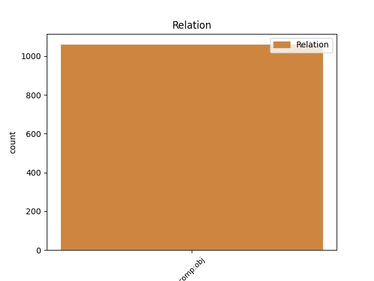
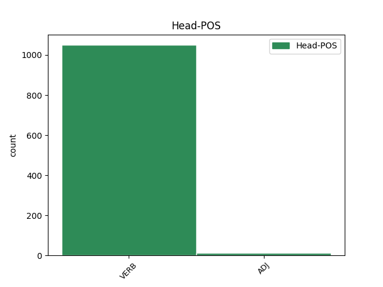
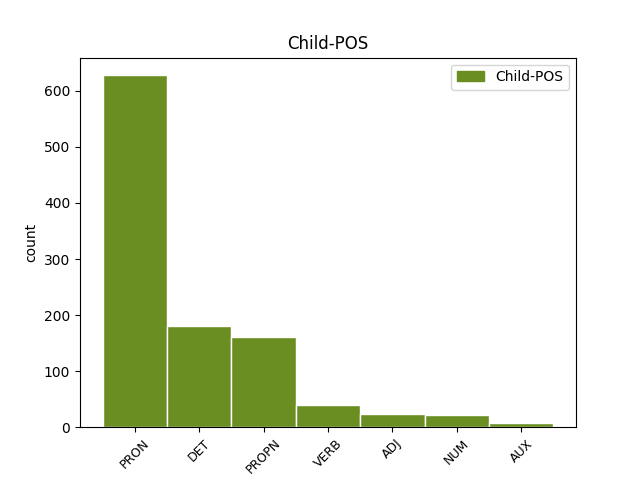

Distribution of features within this leaf



Agreement Rules sorted by frequency.
- When the dependent token is the direct object complements(comp:obj) of the head token, and the dependent token is PRON.
1 * _ _ _ _ 0 _ _ _
2 Čo čo PRON PFns4 Case=Acc|Gender=Neut|Number=Sing|PronType=Int,Rel 4 comp:obj _ _
3 nám _ _ _ _ 0 _ _ _
4 prinieslo priniesť VERB VLdscn+ Aspect=Perf|Gender=Neut|Number=Sing|Polarity=Pos|Tense=Past|VerbForm=Part 0 _ _ _
5 20 _ _ _ _ 0 _ _ _
6 . _ _ _ _ 0 _ _ _
7 storočie _ _ _ _ 0 _ _ _
8 ? _ _ _ _ 0 _ _ _
1 Lenže _ _ _ _ 0 _ _ _
2 leopard _ _ _ _ 0 _ _ _
3 Kerchaka kerchak PROPN SSms4:r Animacy=Anim|Case=Acc|Gender=Masc|Number=Sing 4 comp:obj _ _
4 zranil zraniť VERB VLdscm+ Animacy=Anim|Aspect=Perf|Gender=Masc|Number=Sing|Polarity=Pos|Tense=Past|VerbForm=Part 0 _ _ _
5 a _ _ _ _ 0 _ _ _
6 zakrátko _ _ _ _ 0 _ _ _
7 mu _ _ _ _ 0 _ _ _
8 bol _ _ _ _ 0 _ _ _
9 vodca _ _ _ _ 0 _ _ _
10 goríl _ _ _ _ 0 _ _ _
11 vydaný _ _ _ _ 0 _ _ _
12 na _ _ _ _ 0 _ _ _
13 milosť _ _ _ _ 0 _ _ _
14 a _ _ _ _ 0 _ _ _
15 nemilosť _ _ _ _ 0 _ _ _
16 . _ _ _ _ 0 _ _ _
1 Šaty _ _ _ _ 0 _ _ _
2 , _ _ _ _ 0 _ _ _
3 ktoré ktorý DET PAfp4 Case=Acc|Gender=Fem|Number=Plur|PronType=Int,Rel 4 comp:obj _ _
4 šila šiť VERB VLescf+ Aspect=Imp|Gender=Fem|Number=Sing|Polarity=Pos|Tense=Past|VerbForm=Part 0 _ _ _
5 Flóra _ _ _ _ 0 _ _ _
6 , _ _ _ _ 0 _ _ _
7 sa _ _ _ _ 0 _ _ _
8 nevydarili _ _ _ _ 0 _ _ _
9 . _ _ _ _ 0 _ _ _
1 Všetkým _ _ _ _ 0 _ _ _
2 sa _ _ _ _ 0 _ _ _
3 zdal zdať VERB VLescm+ Animacy=Anim|Aspect=Imp|Gender=Masc|Number=Sing|Polarity=Pos|Tense=Past|VerbForm=Part 0 _ _ _
4 veľmi _ _ _ _ 0 _ _ _
5 zaujímavý zaujímavý ADJ AAms1x Animacy=Anim|Case=Nom|Degree=Pos|Gender=Masc|Number=Sing 3 comp:obj _ SpaceAfter=No
6 , _ _ _ _ 0 _ _ _
7 najmä _ _ _ _ 0 _ _ _
8 pavúčici _ _ _ _ 0 _ _ _
9 Hedvige _ _ _ _ 0 _ _ _
10 . _ _ _ _ 0 _ _ _
1 “ _ _ _ _ 0 _ _ _
2 Veru _ _ _ _ 0 _ _ _
3 mohla môcť VERB VLesaf+ Aspect=Imp|Gender=Fem|Number=Sing|Polarity=Pos|Tense=Past|VerbForm=Part 6 comp:obj _ SpaceAfter=No
4 , _ _ _ _ 0 _ _ _
5 “ _ _ _ _ 0 _ _ _
6 odvetila odvetiť VERB VLdscf+ Aspect=Perf|Gender=Fem|Number=Sing|Polarity=Pos|Tense=Past|VerbForm=Part 0 _ _ _
7 makovica _ _ _ _ 0 _ _ _
8 . _ _ _ _ 0 _ _ _
1 Schytil schytiť VERB VLdscm+ Animacy=Anim|Aspect=Perf|Gender=Masc|Number=Sing|Polarity=Pos|Tense=Past|VerbForm=Part 0 _ _ _
2 jeden jeden NUM NFis4 Animacy=Inan|Case=Acc|Gender=Masc|Number=Sing 1 comp:obj _ _
3 z _ _ _ _ 0 _ _ _
4 mečov _ _ _ _ 0 _ _ _
5 a _ _ _ _ 0 _ _ _
6 zahnal _ _ _ _ 0 _ _ _
7 sa _ _ _ _ 0 _ _ _
8 na _ _ _ _ 0 _ _ _
9 Džafara _ _ _ _ 0 _ _ _
10 . _ _ _ _ 0 _ _ _
Disagree Examples:
1 Ukazuje _ _ _ _ 0 _ _ _
2 sa _ _ _ _ 0 _ _ _
3 teda _ _ _ _ 0 _ _ _
4 , _ _ _ _ 0 _ _ _
5 že _ _ _ _ 0 _ _ _
6 tým _ _ _ _ 0 _ _ _
7 stredoslovenským _ _ _ _ 0 _ _ _
8 nárečím _ _ _ _ 0 _ _ _
9 , _ _ _ _ 0 _ _ _
10 ktorÉ ktorý DET PAns4 Case=Acc|Gender=Neut|Number=Sing|PronType=Int,Rel 12 comp:obj _ _
11 Štúrovci _ _ _ _ 0 _ _ _
12 povýšili povýšiť VERB VLdpcm+ Animacy=Anim|Aspect=Perf|Gender=Masc|Number=Plur|Polarity=Pos|Tense=Past|VerbForm=Part 0 _ _ _
13 na _ _ _ _ 0 _ _ _
14 spisovný _ _ _ _ 0 _ _ _
15 JAZYK _ _ _ _ 0 _ _ _
16 , _ _ _ _ 0 _ _ _
17 bol _ _ _ _ 0 _ _ _
18 prestížny _ _ _ _ 0 _ _ _
19 liptovský _ _ _ _ 0 _ _ _
20 mestský _ _ _ _ 0 _ _ _
21 jazyk _ _ _ _ 0 _ _ _
22 . _ _ _ _ 0 _ _ _
1 VEĽMI _ _ _ _ 0 _ _ _
2 KOMPLIKOVANOU _ _ _ _ 0 _ _ _
3 ZHODOU _ _ _ _ 0 _ _ _
4 OKOLNOSTÍ _ _ _ _ 0 _ _ _
5 HO on PRON PFns4 Case=Acc|Gender=Neut|Number=Sing|Person=3|PronType=Prs 8 comp:obj _ _
6 PO _ _ _ _ 0 _ _ _
7 ROKU _ _ _ _ 0 _ _ _
8 dostal dostať VERB VLdscm+ Animacy=Anim|Aspect=Perf|Gender=Masc|Number=Sing|Polarity=Pos|Tense=Past|VerbForm=Part 0 _ _ _
9 a _ _ _ _ 0 _ _ _
10 odišiel _ _ _ _ 0 _ _ _
11 NA _ _ _ _ 0 _ _ _
12 ROK _ _ _ _ 0 _ _ _
13 do _ _ _ _ 0 _ _ _
14 Nórska _ _ _ _ 0 _ _ _
15 . _ _ _ _ 0 _ _ _
1 Kto _ _ _ _ 0 _ _ _
2 by _ _ _ _ 0 _ _ _
3 to to DET PFns4 Case=Acc|Gender=Neut|Number=Sing|PronType=Dem 4 comp:obj _ _
4 kupoval kupovať VERB VLescm+ Animacy=Anim|Aspect=Imp|Gender=Masc|Number=Sing|Polarity=Pos|Tense=Past|VerbForm=Part 0 _ _ _
5 ? _ _ _ _ 0 _ _ _
6 ! _ _ _ _ 0 _ _ _
1 Jednu jedna NUM NFfs4 Case=Acc|Gender=Fem|Number=Sing 4 comp:obj _ _
2 z _ _ _ _ 0 _ _ _
3 epizód _ _ _ _ 0 _ _ _
4 napísal napísať VERB VLdscm+ Animacy=Anim|Aspect=Perf|Gender=Masc|Number=Sing|Polarity=Pos|Tense=Past|VerbForm=Part 0 _ _ _
5 spoločne _ _ _ _ 0 _ _ _
6 s _ _ _ _ 0 _ _ _
7 Chrisom _ _ _ _ 0 _ _ _
8 Carterom _ _ _ _ 0 _ _ _
9 i _ _ _ _ 0 _ _ _
10 Stephen _ _ _ _ 0 _ _ _
11 King _ _ _ _ 0 _ _ _
12 ! _ _ _ _ 0 _ _ _
1 Johnovi _ _ _ _ 0 _ _ _
2 Lee _ _ _ _ 0 _ _ _
3 Hookerovi hooker PROPN SSms3:r Animacy=Anim|Case=Dat|Gender=Masc|Number=Sing 7 comp:obj _ _
4 sa _ _ _ _ 0 _ _ _
5 toto _ _ _ _ 0 _ _ _
6 všetko _ _ _ _ 0 _ _ _
7 podarilo podariť VERB VLdscn+ Aspect=Perf|Gender=Neut|Number=Sing|Polarity=Pos|Tense=Past|VerbForm=Part 0 _ _ _
8 . _ _ _ _ 0 _ _ _